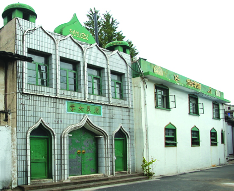

嘉兴市文物保护网 · 市级文物保护单位 · 2014-06-17 · 原文

清真寺位于嘉兴市南湖区建设街道城东社区环城东路469号，东临环城东路，南靠大年堂街，西为干河滩街，北是大年堂后街，占地面积3000平方米。始建于明万历三十年（1602），清乾隆年间曾两次大修和扩建。系伊斯兰教做礼拜的场所，又称礼拜堂。清真寺坐西朝东，全寺建筑由门楼、大殿、讲堂、水房、清泉亭、古碑和清真女寺等组成。其建筑布局匀称，结构严谨，颇有明代江南庭院建筑风格。礼拜大殿与讲堂相连，殿内有4根楠木大柱，故又称“楠木大殿”。讲堂和男礼拜堂均为抬梁和穿枋式砖木结构建筑，朝东有轩廊。男礼拜堂东侧亭子内置有石碑一块，正反两面分别刻有《嘉兴府建真教寺碑记》和《重修嘉兴府礼拜寺碑记》。清真寺历史悠久，是中外多元文化交流的实证，对于研究中外交流史、宗教史有很高历史价值。1981年公布为嘉兴市级文物保护单位。